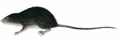
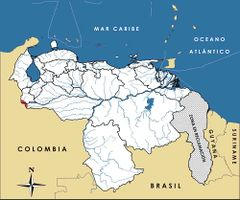

Chibchanomys trichotis
| Ratón pescador andino | |
|---|---|
|  | |
| Riesgo de extinción | |
 Vulnerable (UICN) | |
| Clasificación científica | |
| Reino: | Animalia |
| Filo: | Chordata |
| Clase: | Mammalia |
| Orden: | Rodentia |
| Familia: | Cricetidae |
| Género: | Chibchanomys |
| Especie: | Chibchanomys trichotis |
| Nombre binomial | |
|
Chibchanomys trichotis Thomas, 1897 | |
| Distribución | |
|
 Mapa de distribución de Chibchanomys trichotis | |
Contenido
Información de Evaluación
- Categoría y Criterio Regional: Vulnerable A2ce
- Fecha de Evaluación Regional: 2015
- Evaluadores: Jesús Morales-Campos y Ariany García-Rawlins
- Categoría y Criterio Global: Datos Insuficientes
Justificación
Evaluaciones Previas
1999: Casi Amenazada (NT)
2008: Vulnerable (VU)
Información General
Nombres comunes
Ratón pescador andino, ratón de agua, ratón de torrentes, ratón chibcha, Chibchan water mouse, Chibchan ichthyomyine, fish-eating mouse.
Notas taxonómicas
Sinónimos
Descripción
Ratón de tamaño pequeño, cuyo cuerpo desde la cabeza hasta la base de la cola alcanza entre 10,5 y 13 cm de longitud, y la cola entre 11 y 15 cm, siendo esta de modo usual un poco más larga que el tronco. Pesa entre 40 y 57 g. El pelaje de la cabeza y del lomo es gris oscuro canoso y el del vientre, el cuello y el dorso de las patas es gris claro. Tiene patas largas y anchas con peines de pelos rígidos bien desarrollados y a los lados. Se caracteriza por sus orejas bastante reducidas, de menos de 12 mm, y escondidas entre el pelaje. Tiene ojos muy pequeños y en contraste las vibrisas de la nariz son largas, gruesas y múltiples. Su cola es oscura uniforme, finamente peluda y con un pincel de pelos en la punta. Es de hábitos nocturnos y semiacuáticos. Su nombre común de ratón pescador se deriva de su adaptación a una vida semiacuática, ya que se alimenta de forma principal con invertebrados de agua e insectos, y en ocasiones con peces muy pequeños (Eisenberg 1989, Linares 1998, Soriano et al. 1999, Trujillo, F. et al. 2005).
Distribución
Chibchanomys trichotis se distribuye sobre todo en el noroeste de la cordillera de los Andes, extendiéndose desde la cordillera Oriental colombo-venezolana, en forma más amplia en Colombia y bastante restringida en Ecuador, hasta el norte de Perú (Rodríguez, J. P. y Rojas-Suárez 2003). En Venezuela solo se ha localizado en quebradas de montaña asociadas a bosques nublados de la biorregión de los Andes en el macizo de El Tamá (que viene a ser una prolongación de la cordillera Oriental de Colombia), en el estado Táchira, entre 2400 y 2600 m de altitud (Eisenberg 1989, Linares 1998, Soriano et al. 1999, Trujillo, F. et al. 2005). No se reporta en bosques secundarios o intervenidos (Soriano et al. 1999). Vive en zonas altas, en climas fríos o de páramo, asociadas a cuerpos de agua, riachuelos de aguas frías y torrentosas, o cerca de lagunas de aguas tranquilas (Trujillo, F. et al. 2005).
- Sistema: Terrestre, Dulceacuícola
- Bioregión:
- Intervalo altitudinal (m): 2400-2600
- Endémica: No
Situación
Se trata de una especie restringida a un intervalo altitudinal muy estrecho y definido por la presencia de bosques montanos nublados en una pequeña porción de la cordillera de los Andes (Linares 1998). Además, es especialista de quebradas de montaña, lo cual hace su distribución aún más pequeña. Por lo tanto, en Venezuela su tamaño poblacional es bajo y su riesgo de extinción es un tanto alto. A pesar de su limitada distribución, no se ha catalogado en una categoría de amenaza más alta porque se encuentra distribuida con suficiente amplitud en Colombia y sus poblaciones podrían repoblar las de Venezuela. Se considera que en toda su distribución geográfica su densidad poblacional es baja y muy susceptible a la presencia humana y a los impactos ambientales. En el ámbito internacional califica en Datos Insuficientes (IUCN 2014), mientras que en Perú se le clasifica Vulnerable (Pulido 1991).
- EOO (km2): Temporalmente sin información
- AOO (km2): Temporalmente sin información
- Tendencia Poblacional: Desconocida
Amenazas
La principal amenaza que enfrenta es la destrucción del hábitat, como consecuencia de la tala y la quema de los bosques para dar paso a nuevos cultivos y asentamientos humanos. Dado que la densidad poblacional de la especie es baja, es muy susceptible a la presencia humana y a los impactos ambientales. Dentro del parque nacional El Tamá existen sectores dedicados a usos no compatibles con su condición de área protegida, tales como numerosos cafetales y otros cultivos, y extensas áreas ganaderas que, en conjunto, constituyen casi 17% de la superficie total del parque. Existe una fuerte presión por la expansión de estas actividades, en especial hacia las áreas de bosques de los sectores Nula, Cutufí y Burgua. Por otra parte, en el parque nacional Chorro El Indio, como consecuencia de las invasiones y los asentamientos humanos que datan de muchos años, varias hectáreas de bosque se han visto afectadas de forma muy severa al ser transformados en potreros y cultivos. Del mismo modo, su pequeña área de distribución podría traer como consecuencia que un evento natural catastrófico produjera su desaparición. Un ejemplo de este tipo de acontecimiento son los deslaves resultantes de la deforestación y las fuertes lluvias que afectan a las regiones montañosas del país. La contaminación de ríos y quebradas, la intervención de cuencas, la construcción de represas y las catástrofes naturales, también se consideran amenazas potenciales para la especie (Fernández-Badillo com. pers., Rodríguez, J. P. y Rojas-Suárez 2003).
Conservación
En Venezuela no se han adoptado medidas de conservación específicas para proteger a Chibchanomys trichotis. Los parques nacionales Chorro El Indio y El Tamá en el estado Táchira podrían resguardar algunas poblaciones, pero no se ha evaluado si esta medida es suficiente para mantenerlas viables. Es necesario desarrollar proyectos de investigación de su distribución y abundancia poblacional, ya que es una especie de biología bastante desconocida. Además, se debe garantizar la salvaguardia de las cuencas hidrográficas donde vive, y evaluar las consecuencias que generaría la construcción de nuevos embalses y represas (Fernández-Badillo com. pers., Rodríguez, J. P. y Rojas-Suárez 2003).
Autorías
Autores originales
Juhani Ojasti y Pablo Lacabana
Colaboradores
Ilustrador
Michel Lecoeur
Referencias
- Eisenberg, J. F. (1989). Mammals of the Neotropics. The Northern Neotropics (Vol. 1). Panamá, Colombia, Venezuela, Guyana, Suriname, French Guiana. University of Chicago Press. Chicago y Londres. 449 pp.
- Linares, O. J. (1998). Mamíferos de Venezuela. Sociedad conservacionista Audubon. Caracas. 691 pp.
- IUCN (2014). The IUCN Red List of Threatened Species. Version 2014.3. Accesible en www.iucnredlist.org.
- Pulido, V. (1991). El Libro Rojo de La Fauna Silvestre del Perú. Instituto Nacional de Investigación Agraria y Agroindustrial. Lima, Perú. 219 pp.
- Ojasti, J. y Lacabana, P. (2015). Ratón pescador andino, Chibchanomys trichotis. En: J.P. Rodríguez, A. García-Rawlins y F. Rojas-Suárez (eds.) Libro Rojo de la Fauna Venezolana. Cuarta edición. Provita y Fundación Empresas Polar, Caracas, Venezuela. Recuperado de: animalesamenazados.provita.org.ve/content/raton-pescador-andino Lun, 02/04/2018 - 13:37
- Soriano, P. J., Díaz de Pascual, A., Ochoa-G., J. y Aguilera, M. (1999). Biogeographic analysis of the mammal communities in the Venezuelan Andes. Interciencia 24(1): 17-25.
- Rodríguez, J. P. y Rojas-Suárez, F. (1999). Libro Rojo de la Fauna Venezolana, segunda edición. PROVITA, Fundación Polar. Caracas. 444 pp.
- Rodríguez, J. P. y Rojas-Suárez, F. (2003). Libro Rojo de la Fauna Venezolana (2a ed. reim.). Provita, Fundación Polar. Caracas. 472 pp.
- Rodríguez, J. P. y Rojas-Suárez, F. (Eds.) (2008). Libro Rojo de la Fauna Venezolana, tercera edición. Provita y Shell Venezuela, S. A. Caracas, Venezuela. 364 pp.
- Trujillo, F., Rodríguez-Mahecha, J. V., Díaz Granados, M. C., Tirira, D. y González Hernández, A. (2005). Mamíferos Acuáticos y relacionados con el agua neotropicales. Serie Libretas de Campo Nº 4. Bogotá, Colombia: Conservación Internacional: 134 pp.